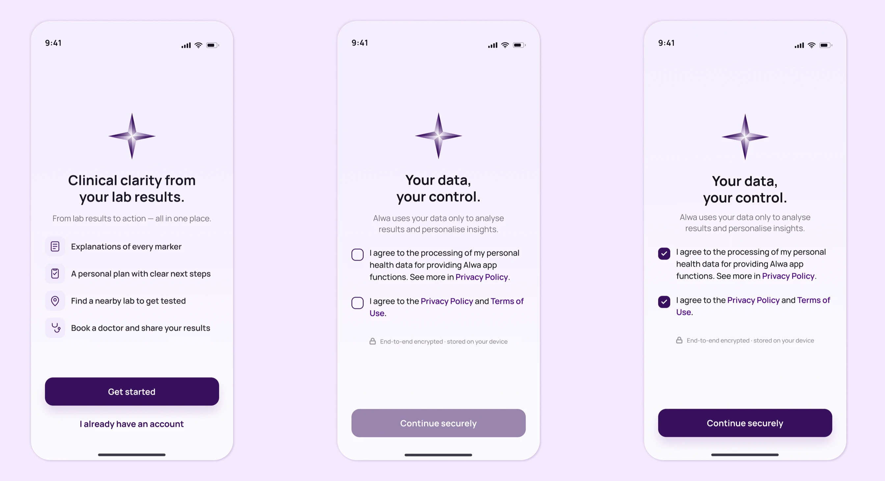
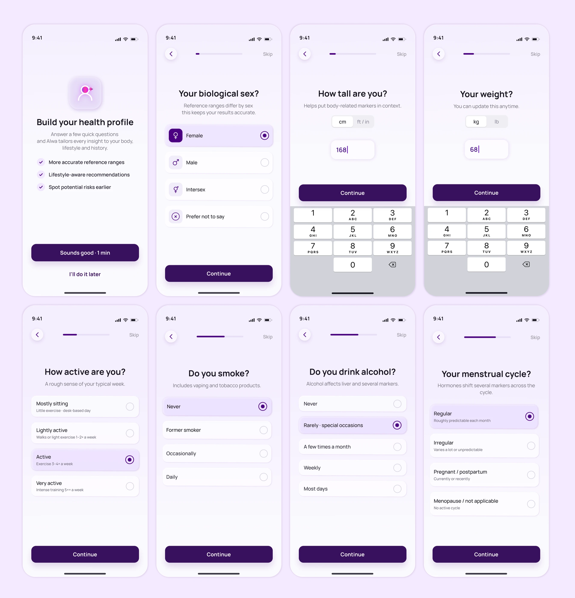
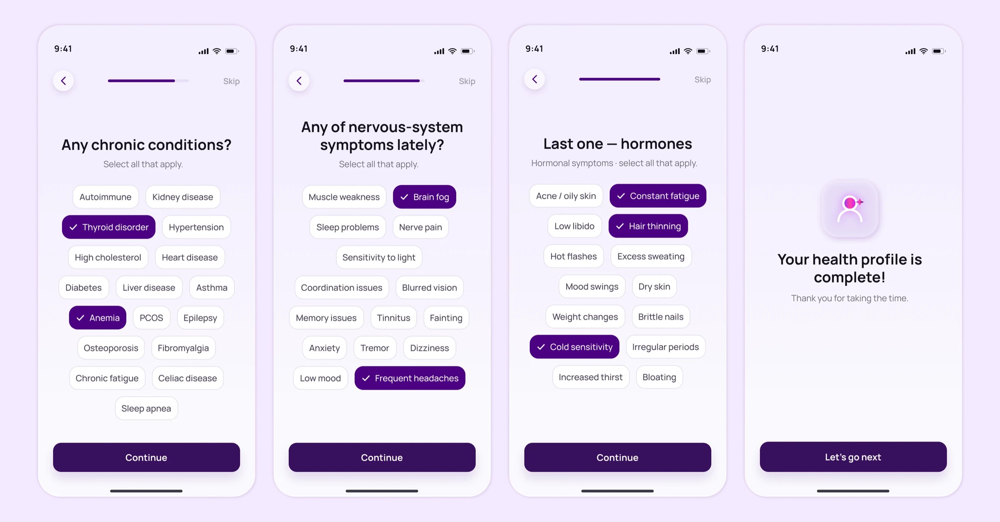

Alwa MVP: результаты анализов и профиль здоровьяAlwa MVP: lab results and health profile
MVP health-приложения: помогает разобрать результаты анализов, добавить контекст о себе и получить понятный следующий шаг.A health app MVP that helps users make sense of lab results, add personal context and get a clear next step.
Context
MVP должен был проверить продуктовую гипотезу: человек готов поделиться личными данными о здоровье, если сразу понимает, зачем это и что получит взамен. Ставка высокая — на чувствительных данных достаточно одного лишнего вопроса или непонятного шага, чтобы пользователь закрыл приложение и не вернулся.The MVP had to test a product hypothesis: people are willing to share personal health data if they immediately understand why it's needed and what they get back. The stakes are high — with sensitive data, a single extra question or an unclear step is enough for the user to close the app and not come back.
Design challenge
Нужно было связать два чувствительных сценария — health data consent и сбор профиля — с полезным результатом: понятным review лабораторных маркеров. При этом flow должен оставаться коротким, спокойным и выглядеть достаточно завершённым для MVP-презентации.I had to connect two sensitive scenarios — health data consent and profile collection — with a useful result: a clear review of lab markers. At the same time, the flow had to stay short, calm and look complete enough for an MVP presentation.

Моя рольMy role
Проектировала MVP-flow от первого знакомства до review результатов: ценностное обещание, consent, сбор health profile, состояния форм, progress, выбор цели и визуальную логику карточек маркеров. Фокус был на том, чтобы продукт выглядел достаточно цельным для первой проверки гипотезы, но не пытался решить всё сразу.I designed the MVP flow from the first touch to results review: the value promise, consent, health-profile collection, form states, progress, goal selection and the visual logic of the marker cards. The focus was on making the product feel whole enough for a first hypothesis check without trying to solve everything at once.
ЗадачиGoals
- Собрать первый сценарий MVP: от value proposition до review lab resultsBuild the first MVP scenario: from value proposition to reviewing lab results
- Показать пользователю пользу до запроса sensitive health dataShow users the value before requesting sensitive health data
- Разложить профиль на короткие шаги с понятным progress и skipBreak the profile into short steps with clear progress and skip
- Спроектировать состояния consent, input, selected options и biomarker cardsDesign the states for consent, input, selected options and biomarker cards
РешениеSolution
MVP начинается с простого обещания: Alwa помогает объяснить каждый маркер, собрать персональный план, найти лабораторию и подготовиться к визиту к врачу. Только после этого пользователь попадает на экран согласий.The MVP starts with a simple promise: Alwa helps explain every marker, build a personal plan, find a lab and prepare for a doctor's visit. Only after that does the user reach the consent screen.

Имя и возраст вынесены в короткие экраны с понятным progress, клавиатурой нужного типа и disabled/active CTA. После ввода продукт возвращает небольшой персональный отклик, а не просто ведёт дальше по форме.Name and age are split into short screens with clear progress, the right keyboard type and a disabled/active CTA. After input, the product gives a small personal response instead of just pushing further through the form.

Следующий блок объясняет, что профиль нужен для более точных reference ranges и lifestyle-aware recommendations. Вопросы разбиты на отдельные шаги: biological sex, рост, вес, активность, smoking, alcohol и menstrual cycle.The next block explains that the profile is needed for more accurate reference ranges and lifestyle-aware recommendations. The questions are split into separate steps: biological sex, height, weight, activity, smoking, alcohol and menstrual cycle.

Хронические состояния, nervous-system симптомы и hormonal симптомы собраны в chip-based screens с множественным выбором. Выбранные пункты сразу получают контрастную заливку и check-mark, а финальный экран закрывает профиль понятным «done»-состоянием.Chronic conditions, nervous-system symptoms and hormonal symptoms are grouped into chip-based screens with multiple choice. Selected items instantly get a contrast fill and a check-mark, and the final screen closes the profile with a clear “done” state.

РезультатOutcome
- Пользователь сначала видит ценность, потом отдаёт данные:The user sees value before giving data: MVP открывается обещанием продукта, а не анкетой — так consent воспринимается как обмен, а не барьер.the MVP opens with the product's promise, not a form — so consent reads as an exchange, not a barrier.
- Приложение просит только нужное:The app asks only for what it needs: возраст, параметры тела, lifestyle и симптомы собираются короткими шагами, которые сразу объясняют, зачем они.age, body metrics, lifestyle and symptoms are collected in short steps that immediately explain why.
- Цифры становятся понятными и не подрывают доверие:The numbers become clear without breaking trust: карточки маркеров показывают статус и референс и честно предупреждают, что выводы строятся только на подтверждённых данных.marker cards show status and reference range and honestly warn that conclusions rely only on confirmed data.